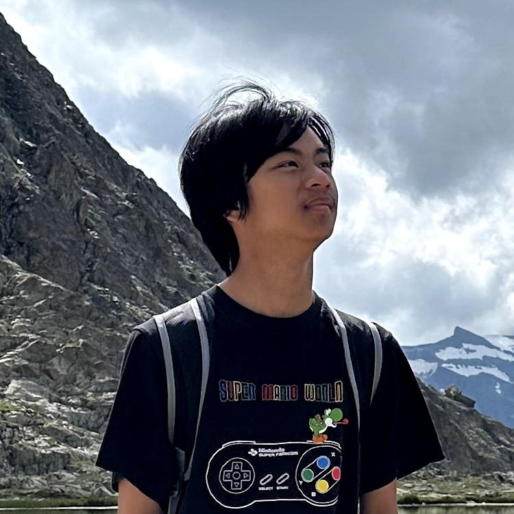

Yo!
I'm a former Top 100 Geometry Dash player turned Mario speedrunner and occasional Kaizo player. I enjoy being open-minded and am always willing to try out new things. Chaotic good.
I'm a former Top 100 Geometry Dash player turned Mario speedrunner and occasional Kaizo player. I enjoy being open-minded and am always willing to try out new things. Chaotic good.

My first experiences with gaming was on the Nintendo DS with New Super Mario Bros., Mario Kart DS, Mario Hoops 3 on 3 and Club Penguin: Elite Penguin Force. Accessing the internet to figure out strategies was out of the question because I was younger, so when I did learn even the most basic strategies, it felt pretty satisfying in that regard. I got a Wii and New Super Mario Bros. Wii for my birthday in 2010, and to be honest I lost count on how many times I've fully completed the game at this point. My friends eventually got PS4s, but I chose to stick to the Nintendo titles; in fact, I felt there was no need in getting myself a Playstation anyway. I would often go over to their houses to play my favorite titles such as Call of Duty: Black Ops III and SpeedRunners — yes, I believe that was my first time speedrunning a game, quite literally.
In 2015 I learned about Geometry Dash through a friend playing on their phone. Being the 2D platformer warlord that I was, I of course had to give it a go myself. My first demon was the Lightning Road, a timeless classic to this day. I beat nearly, if not 100 demons on my iPhone 5; my hardest at the time would've been Jawbreaker if I didn't die at the end as many times as I did.
September 2019 was the time when I built my PC that I still use as of now — I had started watching tech YouTubers the year prior and the idea of "Legos for adults" sounded intriguing to me. My setup had an AMD Ryzen 5 3600 and RTX 2070 with a 144Hz monitor; it was used to play, you guessed it, Geometry Dash. I took no time when it came to beating my first list demon, Under Lavaland in November, then Shock Therapy as my first main list in February the following year. We all know what happened in March, so I doubled down on the grind when it was clear that we were going to be stuck in our homes for a while; GD YouTube also flocked over to Twitch to revive the platform, so with me improving at the game as fast as I was, I hopped on the train myself.
My oldest completions have not survived, but in late 2021 I beat Zodiac as my first top 10 and continued streaming other main lists such as Cognition, RUST, Bloodlust, Ragnarok and SARY NEVER CLEAR; Cognition being completed at #22 on 2/22/22. My prime was in the same year where I beat the above and both Tartarus + Oblivion when they were also top 10, with my Oblivion completion being a near WR fluke from 65%. I still feel like my fluke was undeserved and I'm not uploading that completion until it falls into the legacy list. I continued my momentum in 2023 with Renevant, The Golden and Sonic Wave Infinity, before beating Sinister Silence as my final list demon at the start of 2024.